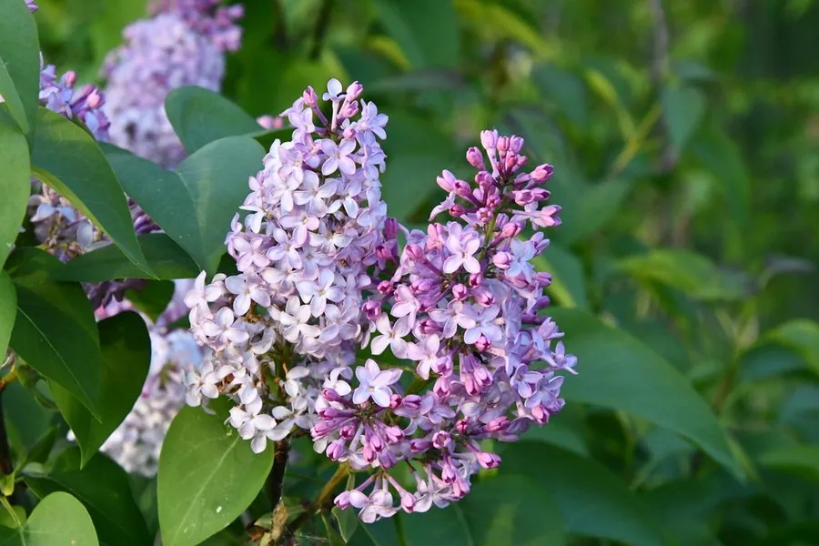

灌木与花木 · 植物界
丁香 Syringa vulgaris

木犀科落叶灌木，春季开紫或白色圆锥花序，香气浓郁，原产巴尔干半岛，是北方庭院常见观赏花木。
- 分类
- 门被子植物门纲木兰纲目唇形目科木犀科属丁香属
- 栖息环境
- 海拔 1500 米以下的向阳坡地、庭院与公园，喜光耐寒耐旱
- 地理分布
- 原产巴尔干半岛；中国华北、东北、西北各地广泛栽培
- 保护级别
- 暂无评估；中国未列入国家重点保护野生植物名录
物种志
丁香为木犀科丁香属落叶灌木或小乔木，高 2–5 米，树皮灰褐色，小枝粗壮。叶片对生，卵形至心形，全缘。圆锥花序顶生，花冠漏斗状，4 裂，有紫、淡紫、白等色，香气浓郁，花期 4–5 月；蒴果长圆形，成熟时开裂，果期 9 月。
丁香原产巴尔干半岛，中国北方广泛栽培，是哈尔滨、呼和浩特等城市的市花。它喜光、耐寒、耐旱，适宜疏松肥沃、排水良好的土壤。丁香花香浓郁，可提取芳香油，花可制花茶；根与树皮可入药。需要注意的是，观赏丁香与香料“丁香”（桃金娘科丁子香）同名异物，前者是庭院花木，后者是热带香料植物。丁香在欧洲庭院中栽培已久，法国诗人雨果曾以丁香寄托情感。
形态与习性
- 株高2–5 m，树皮灰褐色
- 花期4–5 月，圆锥花序、香气浓郁
- 果期9 月，蒴果长圆形
- 光照喜光，光照足则花繁香浓
- 水分耐旱，忌积水
- 土壤疏松肥沃、排水良好的壤土
- 主要用途庭院观赏，花提取芳香油、制花茶
趣味知识
- 观赏丁香与香料“丁香”同名异物，后者是桃金娘科的丁子香。
- 丁香是哈尔滨、呼和浩特等北方城市的市花。
- 丁香花香浓郁，可提取芳香油，也是重要的蜜源植物。
- 欧洲庭院栽培丁香已有数百年历史，雨果曾以丁香寄托情感。